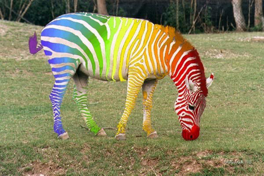

Интересные факты о радуге
Радуга — это атмосферное, оптическое и метеорологическое явление, наблюдаемое при освещении ярким источником света (Солнцем или Луной) множества водяных капель (дождя или тумана).
Радуга выглядит как разноцветная дуга или окружность, цвета которой плавно переходят от красного до фиолетового через множество промежуточных оттенков.
Чаще всего радуга возникает утром и вечером. Чтобы радуга смогла сформироваться, солнечный свет должен попасть в дождевую каплю под углом примерно 42 градуса. Это вряд ли произойдет, когда Солнце находится выше, чем под углом 42 градуса в небе.
Чаще всего наблюдается первичная радуга, при которой свет претерпевает одно внутреннее отражение.
Иногда можно увидеть ещё одну, менее яркую радугу вокруг первой. Это вторичная радуга, которая образована светом, отражённым в каплях два раза. Во вторичной радуге «перевёрнутый» порядок цветов — снаружи находится фиолетовый, а внутри красный. Небо между двумя радугами обычно заметно более тёмное, эту область называют полосой Александра. Своё наименование получила по имени древнегреческого философа Александра Афродисийского, впервые описавшего её в 200-м году нашей эры.
Появление радуги третьего порядка в естественных условиях случается чрезвычайно редко. Считается, что за последние 250 лет было только пять научных сообщений о наблюдении данного феномена.
Благодаря применению специальных методов фотосъёмки и последующей обработки полученных фотографий удаётся зарегистрировать радуги четвёртого, пятого и даже, как предполагается, седьмого порядков.
В лабораторных условиях удаётся получать радуги гораздо более высоких порядков. В печати была информация, что используя лазерное излучение, удалось получить радугу двухсотого порядка.
Чаще всего наблюдается простая радуга в виде дуги, но известно много других оптических феноменов, которые возникают по похожим причинам или похоже выглядят. Среди них, например, туманная (белая) радуга, возникающая на очень маленьких капельках тумана, и огненная радуга (один из видов гало), возникающая на перистых облаках. Похож на радугу и слабый паргелий — гало в 22° слева и справа от солнца. Ночью можно увидеть лунную радугу.
Когда радуга появляется над поверхностью воды (или над другой отражающей поверхностью, например, мокрым песком), может возникнуть так называемая отражённая радуга, однако из-за большого количества условий отражённая радуга — редкое явление.
Считается, что первым, кто дал достаточно точное объяснение феномена радуги был персидский астроном Кутб ад-Дин аш-Ширази (1236—1311), или его ученик Kamal al-din al-Farisi (1260—1320), Примерно в это же время аналогичное объяснение радуги предложил и немецкий учёный Дитер Фрейбургский.
В древнем Китае велись записи появлений радуги и паргелических явлений, с нею связанных. Считается, что данные природные феномены были описаны на целую тысячу лет раньше, чем в Европе. Сохранились рисунки паргелий, выполненные императором минской династии Чжу Гаочжи в 1425 году. В сочинении Шэнь Ко «Записи потока видений» указывается, что радуга образуется в результате игры солнечных лучей в «завесе дождя».
Общая физическая картина радуги была описана в 1611 году Марком Антонием де Доминисом в книге «De radiis visus et lucis in vitris perspectivis et iride». На основании опытных наблюдений он пришёл к заключению, что радуга получается в результате отражения от внутренней поверхности капли дождя и двукратного преломления — при входе в каплю и при выходе из неё.
Более полное объяснение радуги в 1635 году дал Рене Декарт в своём труде «Метеоры» в главе «О радуге». В частности, Декарт верно объяснил механизм образования вторичной радуги.
Теорию Декарта и де Доминиса дополнил И. Ньютон. В своём трактате «Оптика» он разъяснил причины возникновения цветов радуги и объяснил противоположный порядок расположения цветов в радугах первого и второго порядков.
Цвета в радуге расположены в последовательности, соответствующей спектру видимого света.
Ньютон выделял в радуге семь цветов: красный, оранжевый, жёлтый, зелёный, синий, индиго и фиолетовый, хотя первоначально в своей «Оптике» он различал только пять цветов — красный, жёлтый, зелёный, голубой и фиолетовый. Но впоследствии, стремясь создать соответствие между числом цветов спектра и числом основных тонов музыкальной гаммы, Ньютон добавил к пяти перечисленным цветам спектра ещё два.
Изображение радуги было личной эмблемой Екатерины Медичи.
Среди опередивших время изобретений великого Леонардо да Винчи есть конструкция, которую называют мост-радуга, в римском музее даже выставлен её 5-метровый макет. Организация по защите окружающей среды Гринпис использует изображение радуги в качестве символа охраны природы. Корабли всемирной природоохранной организации «Гринпис» носят название «Rainbow Warrior» (англ. Воин Радуги).
Самая долгая (или долго наблюдаемая) радуга была замечена над Шеффилдом в Англии 14 марта 1994 года — она оставалась на небе с 9 утра до 3 часов дня. В мае 2009 года в Сеуле состоялось официальное открытие моста «Фонтан радуги» (Панпхо). Это самый длинный мост-фонтан в мире (длина — 1140 м). Официально занесен в Книгу рекордов Гиннеса. Изображение радуги присутствует на логотипах, гербах и флагах общественных и политических организаций, движений и даже стран.
Цвета радуги
- Радугу всегда видели по-разному у разных народов и в разные периоды истории. В ней различали и три основных цвета, и четыре, и пять…
- Греческий поэт Гомер считал, что радуги состоят из единственного цвета — фиолетового.
- Греческий философ Ксенофан добавил радуге еще два цвета — желто-зеленый и красный.
- Аристотель согласился с Ксенофаном в своем трактате «Метеорология»: «У радуги три цвета, только три, и никаких других».
- Во время Возрождения решили, что в радуге четыре цвета: красный, синий, зеленый и желтый.
- К XVII веку западные мыслители согласились на пять цветов: красный, желтый, зеленый, синий и фиолетовый.
- Радужный Змей австралийских аборигенов был шестицветным.
- Некоторых африканские племена видят в радуге только два цвета — темный и светлый.
- В исламе радуга состоит из четырех цветов – красного, желтого, зеленого и синего, соответствующих четырем стихиям.
- Американских, английских, немецких, французских, японских детей учат шести основным цветам радуги.
- В русской культуре принято выделять в радуге семь цветов - красный, оранжевый, жёлтый, зелёный, голубой, синий, фиолетовый.
- Кроме разницы в количестве цветов в разных странах называют разные цвета, так в Японии зеленый цвет считается оттенком синего, у англичан и в других романских языках нет голубого цвета, для них это просто «светло-синий».
Мнемонические фразы для запоминания последовательности цветов в радуге
Такие фразы существуют в разных языках, в них начальная буква каждого слова соответствует начальной букве названия определённого цвета, и фразы являются так называемым акростихом. Цвета во фразе перечисляются в соответствии с порядком цветов в радуге, от красного (видимый свет с наибольшей длиной волны) до фиолетового (видимый свет с наименьшей длиной волны). В русском языке таких фраз несколько: от известных всем со школьных времен до только что придуманных.
- Каждый Охотник Желает Знать, Где Сидит Фазан.
- Как Однажды Жак-Звонарь Городской Сломал Фонарь.
- Как Однажды Жак-Звонарь Головою Сбил Фонарь.
- Крот Овце, Жирафу, Зайке Гладил Старые Фуфайки.
- Каждый Оформитель Желает Знать, Где Скачать Фотошоп.
- Кем Ощущается Жестокий Звон Гонга Сопротивления Фатальности?
- Кварк Окружает Жаркий Занавес Глюонов, Создающих Флюиды.
Радуга и ассоциированные термины
- Ирис — цветок с богатой гаммой цветов; его название произошло от имени Ириды - богини радуги в древнегреческой мифологии.
- Иридий — химический элемент с атомным номером 77 в периодической системе, металл, получил свое название от греческого ирис (радуга) благодаря разнообразной окраске своих солей.
- От слова ирис получила название и радужная оболочка глаза.
- Понятие ирисовая диафрагма (в фотографических объективах и других оптических приборах для регулировки относительного отверстия объектива, то есть диаметра проходящих через него пучков света) также произошло от греческого «радужная перегородка».
Радуга в кулинарии
Радуга стала новым трендом фаст-фуда. Кроме радужных пончиков, пиццы, блинов, сендвичей с радужным сыром дизайнеры и кулинары создали разноцветные суши. Для этого испльзуется несколько способов сделать суши и роллы разноцветными: покраска риса, использование цветных водорослей нори, подбор ярких овощей и морепродуктов для начинки. Высший пилотаж – это использование только натуральных продуктов для создания эффекта радуги.
Пара анекдотов о радуге
* * *
Выходит старый еврей из своего дома и видит - над городом огромная радуга. Посмотрел он на нее и говорит:
- Hу да, конечно, на это у них деньги есть!
* * *
Если цветное коромысло над рекой повисло, то знайте, что это не радуга, а признак начинающейся шизофрении.
* * *
Грустно, когда радуга вынуждена считаться с мнением подавляющей серости.
* * *
Если ты мечтаешь о разноцветной радуге, то готовься попасть под мокрый и холодный дождь.
* * *
У души не будет радуги, если в глазах не было слёз.
* * *
У всех жизнь, как зебра, а у меня она — радуга!
* * *
Как говорят дальтоники, жизнь - она, как радуга: полоса черная, полоса белая...
* * *
Радуга в шоке от моей жизненной цветовой гаммы...
* * *
После дождя всегда приходит радуга, после слёз — счастье.
* * *
Если такой умный, то опиши радугу слепому.
* * *
Надоело жить на зебре, переезжаю на радугу…
* * *
- Какой твой любимый цвет?
- Радуга!
* * *
Всегда всем недовольный верующий молится:
- Господи, дай мне средства на новый дом!
Ответа нет. На небе появляется радуга. Верующий со вздохом:
- Вот на это у Тебя деньги нашлись...